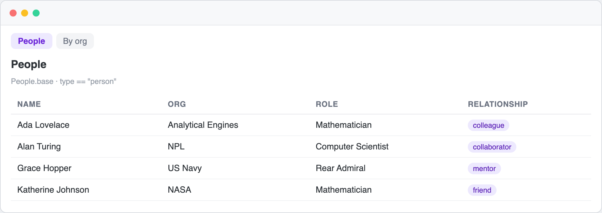
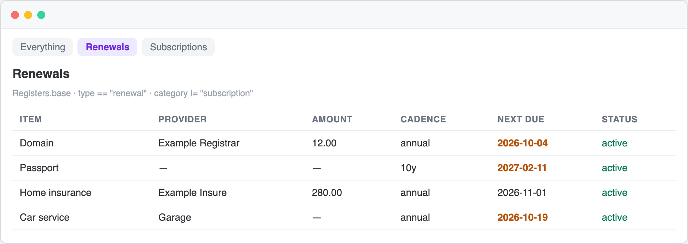

A curated list of everything built on Obsidian Bases, the native, file-based database layer for your vault: views, plugins, starter vaults, templates, agent tooling and examples.
Bases turns your Markdown notes into queryable tables, cards and views with no plugin, no database and no lock-in. It shipped as a core Obsidian feature and the ecosystem around it is just getting started. That is exactly why this list exists.
Every entry is usable today, Bases-specific, and verified by hand. No dead links, no abandoned experiments, no padding. Maintained by @livingdream01.
Official
- Bases documentation - The official guide to views, filters and properties.
- Bases syntax reference - The full
.basefile structure:filters,formulas,properties,views. - Bases formulas - Functions and expressions for computed properties.
- Obsidian changelog - Bases ships as a core plugin; track what lands each release.
What is Bases
A .base file is a small YAML document that queries the notes in your vault by their frontmatter and renders the result as a table, cards, a map or a chart. No plugin, no server, just a file, and it is an open format.
# People.base - everyone in the vault, grouped by org
filters:
and:
- type == "person"
properties:
org:
displayName: Org
phone:
displayName: Phone
views:
- type: table
name: People
order:
- file.name
- org
- phonePoint Obsidian at it and you have a live, sortable, filterable table over your notes. Ready-to-try files live in examples/.
Screenshots
Illustrations of the kind of views you can build from the examples/ files — a People table, and a Renewals register with due dates.


Views & Layouts
Custom view types and layouts for Bases.
- GoodBases - A Notion-style view with colored value pills, hover actions and inline cell editing.
- obsidian-maps - Official map layout; display notes as an interactive map.
- dynamic-views - Elegant grid and masonry card views.
- bases-paginator - A paginated table view with column filtering.
- obsidian-charts - A customizable, native-feeling chart layout built with pure SVG and zero dependencies.
- just-simple-calendar - A calendar view with no external libraries.
- obsidian-bases-board - Kanban and gallery views.
- obsidian-bases-kanban - A Kanban board view to group by status and drag cards.
- graph-explorer-base-view - Renders notes as an interactive force-directed graph.
- obsidian-bookshelf - Display notes as a visual bookshelf with real book covers.
- bases-tag-colors - Per-base tag colors and Notion-style pills.
- bases-relation-diagram - Visualize Relation and Lookup properties as a node diagram.
- obsidian-person-network - Your people as an interactive relationship map.
- obsidian-task-base - Note-per-task management with RFC 5545 recurrence, backed by a Bases file.
- obsidian-charted-roots - Genealogical family charts and maps with Bases integration.
- obsidian-advanced-maps - A photo atlas and route viewer with its own Bases view.
Starter Vaults
Vaults you can clone and use immediately, with Bases wired up.
- obsidian-vault-template (weiihann) - A PKM starter using Categories, Bases, Templater and optional Claude Code integration.
- obsidian-lifecycle (alexmarnell) - Lifecycle-stage folders organised with MOCs and Bases.
- obsidian-workflow-starter (SeanYHan888) - A bilingual starter with daily capture, projects, weekly reviews and Bases.
- ai-vault-contract (gexiro-global) - A starter vault plus a write contract for AI-maintained knowledge bases.
- obsidian-team-vault (SimonSkade1) - A team project-management vault using Bases, Syncthing and Claude Code.
- obsidian-media-starter-vault (resMagi) - Track films, series, books and games with Bases watchlists.
- crm-markdown (CLSherrod) - A local-first CRM in Markdown with Bases dashboards for reminders and follow-ups.
- bases-vault (livingdream01) - A Bases-native, agent-ready starter vault with a four-layer structure, an agent index and zero-dependency scripts.
Agent skills and MCP
Let an agent read and query Bases, the open format.
- obsidian-skills (kepano) - Agent skills from Obsidian's creator; teaches agents Markdown, Bases and JSON Canvas.
- enquire-mcp (oomkapwn) - A read-only, local-first MCP server that speaks Dataview, Bases and PDFs.
Bases-aware agent tooling is the newest frontier here. If you have built some, open a pull request.
Tools & Utilities
- obsidian-dataxtract (stefandanzl) - Exposes an API to extract raw data from tables and filtered Bases objects.
- jade (dhzdhd) - A static-site generator for Markdown notes with work-in-progress support for Bases and Canvas.
- vulcan (tionis) - A wiki CLI for Obsidian-style knowledge bases that can query via Dataview or Bases views.
Related: MCP and vault access
Useful in the same space, but not Bases-specific.
- obsidian-local-rest-api - A secure REST API and MCP server for your vault.
- mcp-obsidian (MarkusPfundstein) - An MCP server over the Obsidian REST API.
- mcpvault (bitbonsai) - A lightweight MCP server for safe vault access.
Related: agent memory
- obsidian-mind (breferrari) - A self-organising vault giving coding agents persistent memory.
- ai-memory-vault (jaredrhod) - An open-source system and templates for persistent AI memory.
- obsidian-second-brain (eugeniughelbur) - A cross-platform skill using your vault as memory for many CLI agents.
- basic-memory - Markdown-native memory you can point at an Obsidian vault.
Related: importers
- obsidian-importer - Convert Apple Notes, Evernote, OneNote, Notion and more into Markdown. Official.
Contributing
Contributions are what make this list useful. Please read CONTRIBUTING.md before opening a pull request.
- One entry per PR, in the format:
- name - one-sentence description. - The project must be usable today, related to Obsidian Bases, and have a README.
- No dead links, no star counts, no self-promotion spam, no paid-only tools without a free tier.
- Entries are checked by CI with awesome-lint and a weekly link checker.